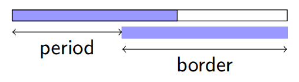
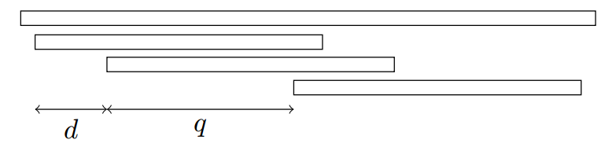
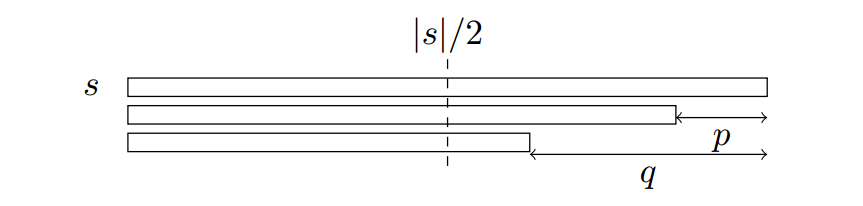
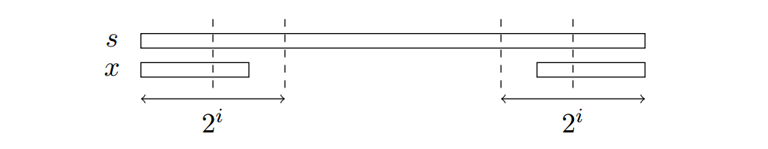
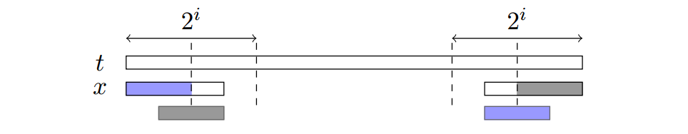
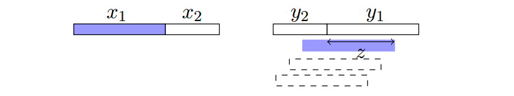

字符串导论
文章目录
本文将讲述关于字符串的基本概念以及延伸的推论。
注：如无特殊说明，通常情况下表示整数区间（即）而不是实数区间。类似地，。
基本定义与符号表示
字符串：字符串通常使用单个字母表示，如，，。
长度：字符串的长度（Length）表示为。
字符：字符串从左到右第个字符记为。如果没有特殊说明，通常是 1 作为起始下标。
子串：中第个字符到第个字符构成的串称作的子串（Substring），记作。其中。
前缀：如果，那么这个子串也被称作的前缀（Prefix）。
后缀：如果，那么这个子串也被称为的后缀（Suffix）。
周期与 Border
Border：若对于满足，那么称是的Border（也称是的 Border）。
周期：若对于，使得，那么称是的周期（Period），也称是的周期。
记的最小周期为。

每个周期（除了的周期）都对应了一个 Border。具体地，周期对应了 Border。
求所有 Border：KMP 算法不停跳 Fail 指针即可。
周期引理
弱周期引理（Weak Periodicity Lemma）：若都是的周期且，则也是的周期。
证明：不妨设。设。，发现和一定满足其中一个。因此可以退出。即是的周期。那么辗转相减即可证明。
周期引理（Periodicity Lemma）：若都是的周期且，则也是的周期。
字符串匹配
引理 1（等差数列引理）：字符串满足，则在中的所有匹配位置构成一个等差数列。
证明：

考虑其中的 3 次匹配：第 1 次，第 2 次和最后一次。设它们的间距分别是。
根据周期的定义得，都是的周期。
由于，因此。因此根据周期引理，也是的周期。
因此不难证明，（设第一次匹配的位置是）都是匹配位置。即构成一个公差为的等差数列。更严格地说，是构成一个公差为的等差数列。
引理 2（公差引理）：字符串满足，则在中的所有匹配位置构成一个等差数列。若等差数列至少有 3 项，则其公差等于的最小周期。此时易知。
仅含两项时不一定成立，如。
Border 的结构
引理（等差数列引理）：字符串的所有长度不小于的 Border 的长度构成等差数列。
证明：

我们知道每个周期都对应一个 Border。而长度不小于的 Border 对应的周期满足周期引理。因此周期是等差数列，则得证。
上述引理刻画了长度不小于的 Border 的结构。那么对于长度更小的 Border 呢？
我们将的所有 Border 按长度分类，有两种情况：
- ，其中；
- ，其中。
对于第二种情况，我们使用上述引理即可。那么考虑第一种情况：

容易证明，如果存在 Border 的长度在，那么对于使用上述引理即可证明，中的 Border 也构成等差数列。
推论：字符串的所有 Border 按长度排序后可以分成段，使得每一段都是等差数列。
子串 Border 查询
给出长度为的字符串，次询问形如，求的子串的所有 Border（等价于周期），用个等差数列的形式表示。
对于询问，设。仍然按照 Border 长度分成两类：
- ，其中。
- ，其中。
Case 1
，其中。

如图的是一个满足要求的 Border。那么容易发现是的前缀，而是的后缀。
因此，不妨求出在中匹配的位置的集合，以及在中匹配的位置的集合。把做一下翻转和移位之后与取交集就是我们要求的了（事实上也是等差数列的交）。
因此我们的问题转化为：
询问子串在中匹配的位置集合（等差数列形式）。
显然我们只需要求出它匹配的第一次，第二次和最后一次即可。换言之问题转化为
询问子串在位置后匹配的第一个位置 / 在前匹配的最后一个位置。
用表示子串，即长度为 2 的幂的子串。这类子串的个数是的。因此我们求出它们的字典序排名，把排名相同的放一起按照出现位置排序。然后询问的时候在这个序列上二分即可。排序的过程和后缀数组构建的过程类似。
而且由于长度不同的子串排名一定不同，因此我们可以构建个序列（相当于是把后缀数组的构建过程记录下来）来处理询问。
那么求出了和，如何求和的交集？也就是求两个等差数列的交集。
如果公差相等那么容易求交集。
引理：四个字符串满足，且在中匹配至少 3 次，在中匹配至少 3 次，则，即最小周期相等。

反证：不妨设。
设的最后一次匹配与的交是。则。
由字符串匹配的公差引理，。
因此也是的周期。但，矛盾。
因此我们证明了和如果是两个等差数列且长度超过 3，那么公差一定相等。因此求交集的复杂度是的。
综上，我们可以在的时间内处理的情况。
Case 2
，其中。
即求长度不小于的 Border 集合。与 Case 1 做法相同。
综上，该算法空间复杂度，时间复杂度。
习题：2015-2016 Petrozavodsk Winter Training Camp, Moscow SU Trinity Contest : D Deep Purple 代码
参考文献
字符串算法选讲，金策，清华大学交叉信息研究院，February 3, 2017
修订记录
- 2020年3月2日 创建文章